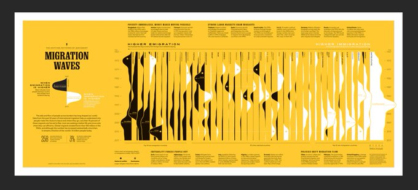

Capítulo 2 Projeto Caixa
Tiago
A ideia deste projeto é analisar o comportamento do caixa e das obrigações financeiras dos órgãos federais, com a finalidade de fornecer informações para a gestão da programação financeira por parte do Tesouro Nacional, além de identificar oportunidades de melhorias nesse processo, e possivelmente fundamentar a criação de indicadores para avaliação da gestão financeira das unidades do Governo Federal.
Vamos elencar aqui alguns aspectos, ou componentes, importantes do projeto, sem uma ordem específica.
2.1 É preciso de início conhecer o perfil das despesas e receitas orçamentárias desses órgãos.
Vamos começar com um perfil das despesas do Ministério da Justiça (que já tem um excelente sistema de acompanhamento das despesas).
Tentar compatibilizar as informações orçamentárias (classificações como função, subfunção, ação, grupo de despesa, indicadores orçamentários etc.) com as informações financeiras (vinculação de pagamento, essencialmente).
O que estamos chamando de classificadores orçamentários: Função, Subfunção, Programa, Ação, Grupo de Despesa, Modalidade de Aplicação, Elemento de Despesa, Indicador de Resultado EOF, Indicador de Exceção Decreto.
O que estamos chamando de classificadores financeiros: Vinculação de Pagamento, essencialmente.
A fonte de recurso é um caso especial, é um classificador comum a esses dois contextos, orçamentário e financeiro.
2.2 Como fazer isso diretamente a partir do Siafi?
Algumas ideias, a serem testadas:
analisar as despesas pagas, pelos classificadores, pelo número da nota de empenho e pelo número do documento de pagamento; e relacionar documento de pagamento x nota de empenho x vinculação de pagamento pelo campo “inscrição” do documento de pagamento.
analisar as despesas pagas, pelos classificadores, pelo número da nota de empenho e pelo número do documento de pagamento; e tentar compatibilizar com as informações dos pagamentos efetuados, por vinculação de pagamento e número do documento de pegamento.
Mais simples: parecido com o anterior, a partir da tabela com as despesas pagas detalhadas pelos classificadores orçamentários, empenho e documento de pagamento, buscar a vinculação de pagamento de uma tabela com toda a movimentação do limite de saque detalhada por documento. Assim, quando a movimentação do limite de saque for um pagamento, o documento correspondente, um documento de pagamento, pode ser usado como chave para relacionar as duas tabelas.
Teríamos então três extrações: uma para a movimentação no caixa e outras duas, semelhantes em termos de detalhamentos, para os pagamentos totais e para as obrigações a pagar. A relação dos campos está simplificada, e os campos destacados são aqueles que só aparecem na tabela 1, ou que só aparecem nas tabelas 2 e 3.
2.2.1 Movimentações diárias do Limite de Saque (item de informação: “LIMITES DE SAQUE”)
- Órgão Máximo
- Órgão
- UG
- Vinculação de Pagamento
- Fonte Detalhada
- Fonte (posições 3 e 4 da fonte detalhada – exemplo: se a fonte detalhada é:
0100123456, a fonte será00) - Documento Lançamento [chave para fazer a junção com tabela (2)]
- Movimento / Valor Financeiro
2.2.2 Pagamentos diários (item de informação: “PAGAMENTOS TOTAIS”)
- Órgão Máximo
- Órgão
- UG
- Fonte Detalhada
- Fonte (posições 3 e 4 da fonte detalhada – exemplo: se a fonte detalhada é:
0100123456, a fonte será00) - Função
- Subfunção
- Programa
- Ação
- Grupo de Despesa
- Modalidade de Aplicação
- Elemento de Despesa
- Indicador de Resultado EOF (indica se a despesa é primária ou financeira, entre outras coisas)
- Indicador de Exceção Decreto
- Ano do Empenho
- Empenho
- Órgão Máximo da UO (o “dono” original do orçamento, que pode ter sido em algum momento “descentralizado”, isto é, transferido, para um óutro “Órgão Máximo” – ou seja, se o Órgão Máximo da UO é diferente do Órgão Máximo, significa que a unidade está realizando uma despesa com orçamento de outro órgão)
- Documento Lançamento [chave para fazer a junção com tabela (1)]
- Movimento / Valor Financeiro
2.2.3 Movimentações diárias em obrigações a pagar (item de informação: “VALORES LIQUIDADOS A PAGAR (EXERCICIO + RP)”)
- Órgão Máximo
- Órgão
- UG
- Fonte Detalhada
- Fonte (posições 3 e 4 da fonte detalhada – exemplo: se a fonte detalhada é:
0100123456, a fonte será00) - Função
- Subfunção
- Programa
- Ação
- Grupo de Despesa
- Modalidade de Aplicação
- Elemento de Despesa
- Indicador de Resultado EOF (indica se a despesa é primária ou financeira, entre outras coisas)
- Indicador de Exceção Decreto
- Ano do Empenho
- Empenho
- Órgão Máximo da UO (o “dono” original do orçamento, que pode ter sido em algum momento “descentralizado”, isto é, transferido, para um óutro “Órgão Máximo” – ou seja, se o Órgão Máximo da UO é diferente do Órgão Máximo, significa que a unidade está realizando uma despesa com orçamento de outro órgão)
- Documento Lançamento (acho que não será necessário)
- Movimento / Valor Financeiro
2.3 O que analisar?
Com (1) e (3) podemos obter os saldos diários do caixa (tabela (1)) e das obrigações a pagar (tabela (3)) – e calcular a disponibilidade líquida diária, como sendo o saldo do caixa (item “LIMITES DE SAQUE”) subtraído das obrigações a pagar (item “VALORES LIQUIDADOS A PAGAR (EXERCICIO + RP)”)–, para cada unidade gestora ou órgão, e para cada fonte de recursos. Para isso sumarizaríamos os dados por DIA_LANC, UG, ORGAO, FONTE e ITEM_INFORMACAO. Essa seria a tabela (i).
# tem ID_DOCUMENTO_CCOR estranho (com valores -7)
# tem ID_DOCUMENTO == SALDO INICIAL 2017 2018 2019
# o que é obrigacoes_a_pagar negativa?
#inner_join: 96113
#left_join: 151432
#right_join: 110739
#full_join: 166058
disponibilidades_liquidas_diarias <- inner_join(
lim_saque %>%
group_by(
NO_DIA_COMPLETO,
NO_UG,
NO_ORGAO,
# NO_ITEM_INFORMACAO,
NO_FONTE_RECURSO
) %>%
summarise(
saldo_diario = sum(SALDORITEMINFORMAO)
),
obrigacoes %>%
rename(
NO_ORGAO = NO_ORGAO...16
) %>%
group_by(
NO_DIA_COMPLETO,
NO_UG,
NO_ORGAO,
# NO_ITEM_INFORMACAO,
NO_FONTE_RECURSO
) %>%
summarise(
obrigacoes_a_pagar = sum(SALDORITEMINFORMAO)
)
) %>%
mutate(
disponibilidade_liquida = saldo_diario - obrigacoes_a_pagar
) %>%
filter(
!str_detect(NO_DIA_COMPLETO , "-09/00/")
) %>%
ungroup %>%
mutate(
NO_DIA_COMPLETO = dmy(NO_DIA_COMPLETO)
) %>%
padr::pad(group = c("NO_UG", "NO_ORGAO", "NO_FONTE_RECURSO")) %>%
mutate(
ano = year(NO_DIA_COMPLETO),
mes = month(NO_DIA_COMPLETO),
dia = day(NO_DIA_COMPLETO),
paded = !is.na(saldo_diario)
) %>%
tidyr::fill(saldo_diario, obrigacoes_a_pagar, disponibilidade_liquida) ## Joining, by = c("NO_DIA_COMPLETO", "NO_UG", "NO_ORGAO", "NO_FONTE_RECURSO")## Warning: datetime variable does not vary for 32 of the groups, no padding
## applied on this / these group(s)## pad applied on the interval: day# explorando a relacao fonte x ug
library(networkD3)
abrevia_palavras <- function(str) {
str %>%
str_replace_all("SUPERINTENDENCIA", "SUPT") %>%
str_replace_all("REGIONAL", "REG") %>%
str_replace_all("ADMINISTRACAO", "ADM") %>%
str_replace_all("DIRETORIA", "DIR") %>%
str_replace_all("COORDENACAO", "COORD") %>%
str_replace_all("NACIONAL", "NAC") %>%
str_replace_all("FINANCEIROS", "FIN") %>%
str_replace_all("PROGNOSTICOS", "PROG") %>%
str_replace_all("ESTADO", "EST") %>%
str_replace_all("POLITICAS", "POL") %>%
str_replace_all("RECURSOS", "REC") %>%
str_replace_all("ORDINARIOS", "ORD") %>%
str_replace_all("ARRECADADOS", "ARREC")
}
data = disponibilidades_liquidas_diarias %>%
ungroup %>%
filter(NO_DIA_COMPLETO == first(NO_DIA_COMPLETO), saldo_diario > 0) %>%
select(NO_FONTE_RECURSO, NO_UG, saldo_diario) %>%
mutate(
NO_FONTE_RECURSO = abrevia_palavras(NO_FONTE_RECURSO),
NO_UG = abrevia_palavras(NO_UG),
NO_FONTE_RECURSO_id = as.numeric(as.factor(NO_FONTE_RECURSO)) - 1,
NO_UG_id = as.numeric(as.factor(NO_UG)) + max(NO_FONTE_RECURSO_id)
)
data_node = data.frame(node = data %>% select(NO_FONTE_RECURSO, NO_UG) %>% map(~sort(unique(.x))) %>% reduce(c))
networkD3::sankeyNetwork(Links = data %>% mutate(), Nodes = data_node, Source = 'NO_FONTE_RECURSO_id',
Target = 'NO_UG_id', Value = 'saldo_diario', NodeID = 'node',
units = 'BRL')## Links is a tbl_df. Converting to a plain data frame.Com (1) e (2) poderíamos relacionar, no contexto dos pagamentos, as informações orçamentárias com as vinculações de pagamento, obtendo uma tabela (ii). Partiríamos de (2) e faríamos um join com (1), por “Documento de Lançamento”, para trazer a “Vinculação de Pagamento” da tabela (1) (acho que seria interessante trazer também o campo de Movimento / Valor da tabela (1), porque pode acontecer de um mesmo pagamento ter utilizado mais de uma vinculação de pagamento. Nesse caso, o valor mostrado na tabela (2) seria o valor consolidado, e precisaríamos do ).
vinculacao_de_pagamentos <- inner_join(
pagamentos %>%
group_by(
NO_DIA_COMPLETO,
ID_DOCUMENTO
) %>%
summarise(
pagamento = sum(SALDORITEMINFORMAO)
),
lim_saque %>%
group_by(
NO_DIA_COMPLETO,
ID_DOCUMENTO
) %>%
summarise(
NO_VINCULACAO_PAGAMENTO = first(NO_VINCULACAO_PAGAMENTO),
vinculacoes_distintas = n_distinct(NO_VINCULACAO_PAGAMENTO),
saldo_diario = sum(SALDORITEMINFORMAO)
)
) %>%
mutate(
pagamento_por_saldo = pagamento/saldo_diario
)## Joining, by = c("NO_DIA_COMPLETO", "ID_DOCUMENTO")Finalmente com (1), podemos analisar as movimentações para tipo de documento, obtendo um histórico das movimentações de cada órgão e cada UG, a que chamaremos de (iii).
2.4 Questões iniciais a serem investigadas
- Qual o comportamento do caixa e das obrigações a pagar (e da disponibilidade líquida) no período analisado? Por órgão? Por unidade? Por fonte? Por unidade e por fonte? (Tabela (i))
(semelhante ao que foi feito superficialmente aqui, só que melhor, com mais rigor.)
set.seed(112);disponibilidades_liquidas_diarias %>%
filter(NO_UG %in% sample(NO_UG, 1),
NO_DIA_COMPLETO > "2019-06-01") %>%
group_by(NO_DIA_COMPLETO, NO_UG) %>%
summarise(
saldo_diario = sum(saldo_diario),
obrigacoes_a_pagar = sum(obrigacoes_a_pagar),
disponibilidade_liquida = sum(disponibilidade_liquida)
) %>%
ungroup %>%
gather(movimentacao, valor, saldo_diario, obrigacoes_a_pagar, disponibilidade_liquida) %>%
ggplot() +
geom_hline(yintercept = 0) +
geom_point(aes(x = as.factor(NO_DIA_COMPLETO), y = valor, size = NO_UG, colour = movimentacao), alpha = 0.5) +
geom_step(aes(x = as.numeric(as.factor(NO_DIA_COMPLETO)), y = valor, colour = movimentacao), alpha = 0.5) +
coord_flip() +
theme_minimal() +
theme(legend.position = "right")## Warning: Using size for a discrete variable is not advised.a1. Há casos em que unidades de um mesmo órgão permanecem com disponibilidade líquida negativa, enquanto outras unidades desse mesmo órgão estão com disponibilidade positiva? E se levarmos em consideração a fonte de recursos, há casos em que o órgão passa por períodos com disponibilidade negativa numa fonte, enquanto há recursos disponíveis em outra fonte? E se levarmos em consideração as duas coisas (unidade + fonte: ou seja, uma unidade de um mesmo órgão fica com disponibilidade negativa numa fonte, enquanto outra unidade desse mesmo órgão possui disponibilidade positiva nessa mesma fonte?)
A partir de (ii), como as classificações orçamentárias se relacionam com as classificações financeiras? Especificamente, é possível identificar certos tipos de despesas que são sempre (ou frequentemente) pagas com recursos de determinadas vinculações?
Se for possível a identificação mencionada em (b), então, poderíamos fazer uma versão de (i) em que os dados estariam detalhados também por vinculação de pagamento e alguns classificadores orçamentários. Com o resultado de (b), poderíamos então refinar (a) e (a1), estimando a disponibilidade líquida para cada vinculação, considerando as classificações orçamentárias das obrigações. Por exemplo, a unidade pode ter saldo suficiente para cobrir todas as suas obrigações; mas, quando se analisam na prática que vinculações costumam pagar que obrigações (algo obtido de (b)), pode-se observar que na verdade há suficiência em algumas vinculações, mas insuficiência em outras.
Qual o comportamento do caixa das unidades, em termos de movimentações? Para isso, podemos considerar os seguintes tipos de movimentações (sete, por enquanto), de acordo com o sinal do valor da movimentação, e do tipo do documento de lançamento (posições 16 e 17 do campo
ID_DOCUMENTO):
- Receitas próprias - movimentos positivos por RAs;
- Recebimentos de recursos financeiros - movimentos positivos por PFs;
- Anulações de pagamentos - movimentos positivos por DF, DR, GF, GP, GR ou OB;
- Ajustes contábeis - movimentos por NS;
- Pagamentos - movimentos negativos por DF, DR, GF, GP, GR ou OB;
- Ajustes na receita arrecadada (anulações, retificações etc.): movimentos negativos por RA; e
- Liberações de recursos para outros órgãos - movimentos negativos por PFs.
- Provavelmente vamos observar grandes recebimentos de recursos financeiros seguidos por grandes despesas. Nesses casos, em geral, qual o intervalo entre essas duas operações?
2.5 Inspirações
NatGeo immigrations. Pode ser interessante fazer algo semelhante para visualizar e comparar o saldo diário das unidades.

https://twitter.com/aLucasLopez/status/1153646875427385344?s=20
Para mostrar a composição das despesas, vamos usar um diagrama de bolhas em D3 semelhante ao do Jim Vallandingham.